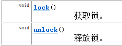
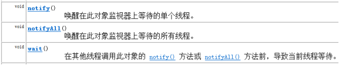
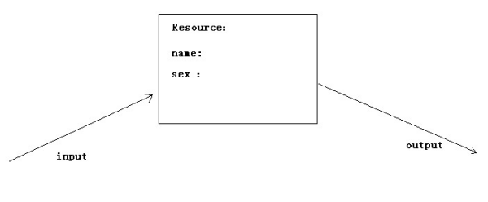

1. 线程安全
如果有多个线程在同时运行，而这些线程可能会同时运行这段代码。程序每次运行结果和单线程运行的结果是一样的，而且其他的变量的值也和预期的是一样的，就是线程安全的。
其实，线程安全问题都是由全局变量及静态变量引起的。若每个线程中对全局变量、静态变量只有读操作，而无写操作，一般来说，这个全局变量是线程安全的；若有多个线程同时执行写操作，一般都需要考虑线程同步，否则的话就可能影响线程安全。
1.1线程同步（Synchronized 关键字）
线程同步的方式有两种：
- 方式1：同步代码块
- 方式2：同步方法
1.1.1 同步代码块
同步代码块: 在代码块声明上 加上synchronized
1 | synchronized (锁对象) { |
同步代码块中的锁对象可以是任意的对象；但多个线程时，要使用同一个锁对象才能够保证线程安全。
1.1.2 同步方法
- 同步方法：在方法声明上加上synchronized
1 | public synchronized void method(){ |
同步方法中的锁对象是 this
- 静态同步方法: 在方法声明上加上static synchronized
1 | public static synchronized void method(){ |
静态同步方法中的锁对象是 类名.class
1.2 死锁
同步锁使用的弊端：当线程任务中出现了多个同步(多个锁)时，如果同步中嵌套了其他的同步。这时容易引发一种现象：程序出现无限等待，这种现象我们称为死锁。这种情况能避免就避免掉。
1 | synchronzied(A锁){ |
1.3 Lock接口
Lock 实现提供了比使用 synchronized 方法和语句可获得的更广泛的锁定操作。
- Lock接口中的常用方法

Lock提供了一个更加面对对象的锁，在该锁中提供了更多的操作锁的功能。
2. 线程之间的通信——等待唤醒机制
等待唤醒机制所涉及到的方法：
- wait（） :等待，将正在执行的线程释放其执行资格 和 执行权，并存储到线程池中。
- notify（）：唤醒，唤醒线程池中被wait（）的线程，一次唤醒一个，而且是任意的。
- notifyAll（）： 唤醒全部：可以将线程池中的所有wait() 线程都唤醒。
其实，所谓唤醒的意思就是让 线程池中的线程具备执行资格。必须注意的是，这些方法都是在 同步中才有效。同时这些方法在使用时必须标明所属锁，这样才可以明确出这些方法操作的到底是哪个锁上的线程。

我们先从一个简单的示例入手:

如上图说示，输入线程向Resource中输入name ,sex , 输出线程从资源中输出，先要完成的任务是：
- 1.当input发现Resource中没有数据时，开始输入，输入完成后，叫output来输出。如果发现有数据，就wait();
- 2.当output发现Resource中没有数据时，就wait() ；当发现有数据时，就输出，然后，叫醒input来输入数据。
下面代码，模拟等待唤醒机制的实现：
- 模拟资源类
1 | public class Resource { |
1 | public synchronized void out() { |
- 输入线程任务类
1 | public class Input implements Runnable { |
- 输出线程任务类
1 | public class Output implements Runnable { |
- 测试类
1 | public class ResourceDemo { |